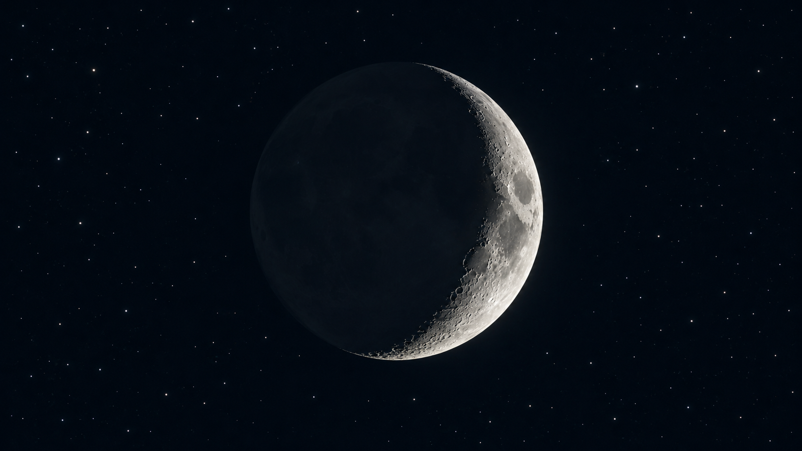
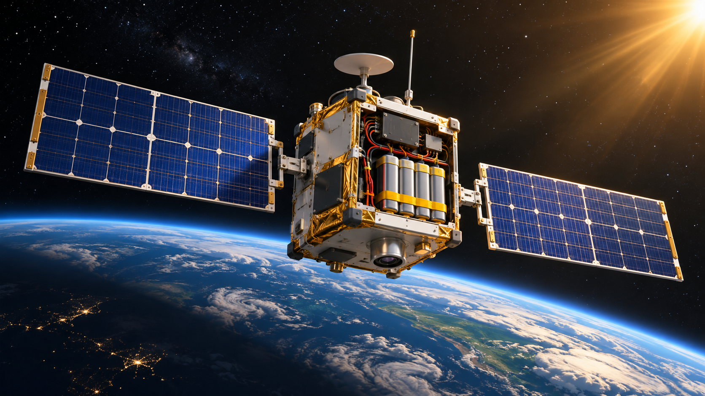
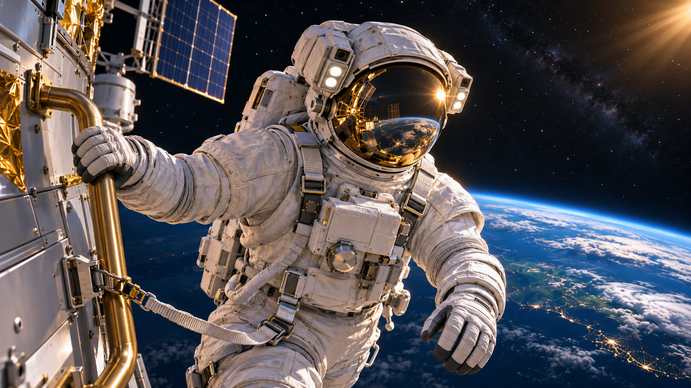
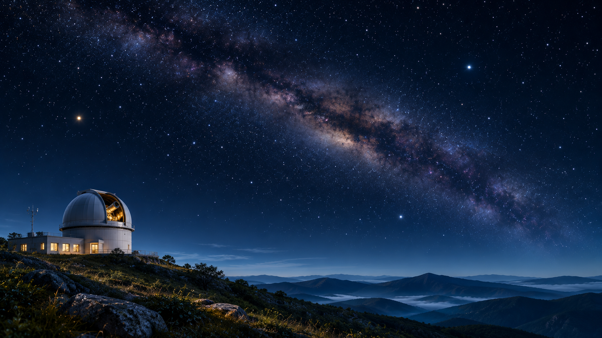
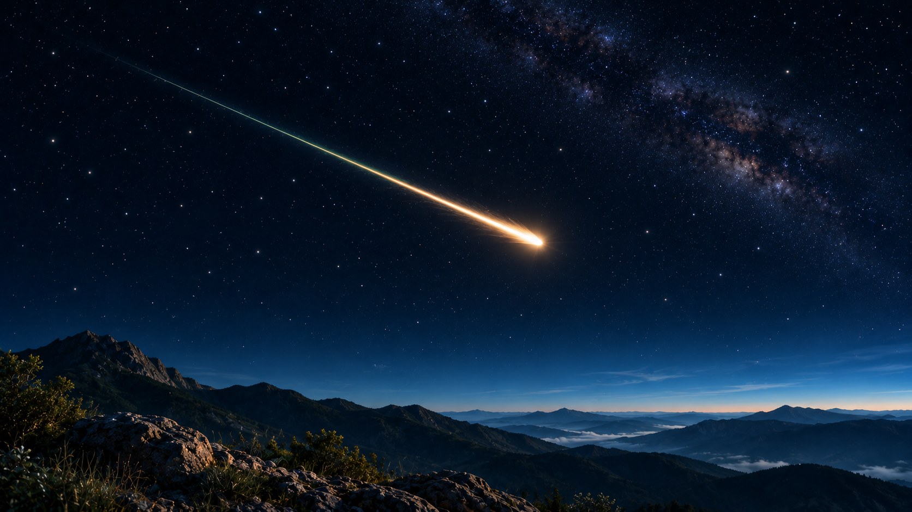

月球探索 · 月相
月亮為什麼會變形？
從月牙到滿月，為什麼同一顆月球會有這麼多種樣子？
10 篇太空小知識，從月球表面到地球軌道，再一起探索火星與夜空。挑一個你好奇的問題開始讀。
共 10 篇文章
試試其他關鍵字，或清除搜尋與分類，重新探索全部文章。

月球探索 · 月相
從月牙到滿月，為什麼同一顆月球會有這麼多種樣子？

月球探索 · 月面地質
從月面的凹坑和岩屑，找出撞擊留下的線索。

火箭與衛星 · 衛星工程
陽光被地球遮住後，看看衛星怎麼讓儀器繼續運作。

火箭與衛星 · 火箭科學
火箭不用推著空氣前進。看看噴出的氣體如何讓它加速。

火箭與衛星 · 軌道與引力
衛星其實一直在往地球落下，卻也一直向前移動。
太空生活
太空站仍受到地球引力，漂浮的祕密是大家一起自由落下。

太空生活 · 太空裝備
從氧氣到散熱，太空衣就像一艘穿在身上的小型太空船。

行星探索
紅色不是因為很熱，而是藏在火星岩石和塵土裡的鐵。

夜空觀察
星光穿過不斷流動的大氣，才在我們眼中忽明忽暗。

夜空觀察 · 太陽系小天體
天空中一閃而過的亮線，通常是小碎片進入大氣留下的光。